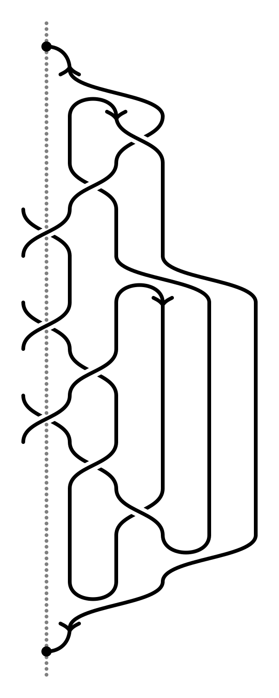

show all invariants|show all metadata
Input data and context

% counterexample candidate
s.r1.x2.y1.y0.r2.y0.y1.y0.y1.x2.u3.u1
,1
% Simplifies with options '-qs' to l1.y0.l1.x2.l3.y2.y2.y1.l3.y2.y2.x4.y1.y3.x4.y2.y0.y1.y1.x3.u2.y0.y5.y4.x3.y1.u2.y1.x0.x2.x3.y1.y2.u3.y1.y0.y1.y0.y0.y0.y1.y0
% Simplifies with options '-qs' to l1.y0.l1.x2.l3.y2.y2.y1.l2.x3.y2.y1.y0.x4.y3.x4.y2.y1.y1.x3.u2.y5.y4.x3.y0.y1.u2.y1.x0.x2.y1.x3.x3.u2.y1.y1.y0.y1.y1.y0.y1.y1
Bar-Natan multicurve \(\mathrm{\widetilde{BN}}(T)\)
options -c0-qs
(diagram)
(metadata)
% file 'examples/check/ce1/cxBNr-c0-qs', generated by kht++ 0.1 on Mon Nov 16 17:15:55 2026 UTC
1) h^ -3 q^ -4 δ^1 ⬮~~(-S)~>⬯—>⬯~>⬮—>⬮<~⬯<—⬯<~⬮<—
2) h^ -4 q^ -4 δ^2 ⬮~~(-S)~>⬯—>⬯~>⬮—>⬮<~⬯<—⬯<~⬮<—
3) h^ -9 q^-12 δ^3 ⬮~~(-S)~>⬯—>⬯~>⬮—>⬮<~⬯<—⬯<~⬮<—
4) h^ -2 q^ -2 δ^1 ⬮~~(-S)~>⬯—>⬯~>⬯—>⬯~>⬮—>⬮<~⬯<—⬯<~⬯<—⬯<~⬮<—
5) h^ -7 q^-10 δ^2 ⬮~~(-S)~>⬯—>⬯~>⬯—>⬯~>⬮—>⬮<~⬯<—⬯<~⬯<—⬯<~⬮<—
6) h^-13 q^-18 δ^4 ⬮~~(-S)~>⬯—>⬯~>⬯—>⬯~>⬮—>⬮<~⬯<—⬯<~⬯<—⬯<~⬮<—
7) h^ 0 q^ 0 δ^0 ⬮<~S~~⬯<—⬯<~⬯<—⬯<~⬮—>⬮~>⬯—>⬯~>⬯—>⬯~>⬯—>⬯~>⬮<—⬮~>⬯—>⬯~>⬮<—⬮<~⬯<—⬯<~⬯<—⬯<~⬮—>⬮
options -c3-qs
(diagram)
(metadata)
% file 'examples/check/ce1/cxBNr-c3-qs', generated by kht++ 0.1 on Mon Nov 16 17:15:35 2026 UTC
1) h^ -3 q^ -4 δ^1 ⬮~~(-S)~>⬯—>⬯~>⬮—>⬮<~⬯<—⬯<~⬮<—
2) h^ -4 q^ -4 δ^2 ⬮~~(-S)~>⬯—>⬯~>⬮—>⬮<~⬯<—⬯<~⬮<—
3) h^ -9 q^-12 δ^3 ⬮~~(-S)~>⬯—>⬯~>⬮—>⬮<~⬯<—⬯<~⬮<—
4) h^ -2 q^ -2 δ^1 ⬮~~(-S)~>⬯—>⬯~>⬯—>⬯~>⬮—>⬮<~⬯<—⬯<~⬯<—⬯<~⬮<—
5) h^ -7 q^-10 δ^2 ⬮~~(-S)~>⬯—>⬯~>⬯—>⬯~>⬮—>⬮<~⬯<—⬯<~⬯<—⬯<~⬮<—
6) h^-13 q^-18 δ^4 ⬮~~(-S)~>⬯—>⬯~>⬯—>⬯~>⬮—>⬮<~⬯<—⬯<~⬯<—⬯<~⬮<—
7) h^ 0 q^ 0 δ^0 ⬮<~S~~⬯<—⬯<~⬯<—⬯<~⬮—>⬮~>⬯—>⬯~>⬯—>⬯~>⬯—>⬯~>⬮<—⬮~>⬯—>⬯~>⬮<—⬮<~⬯<—⬯<~⬯<—⬯<~⬮—>⬮
Khovanov multicurve \(\mathrm{\widetilde{Kh}}(T)\)
options -c0-qs
(diagram)
(metadata)
% file 'examples/check/ce1/cxKhr-c0-qs', generated by kht++ 0.1 on Mon Nov 16 17:15:55 2026 UTC
1) h^ -1 q^ -1 δ^1/2 ⬮~~(-S^2)~>⬮<— r(0) q^0 δ|^1/2
2) h^ 1 q^ 3 δ^1/2 ⬮~~(-S)~>⬯—>⬯~>⬮—>⬮<~⬯<—⬯<~⬮<— s2(∞) q^6 δ_^0
3) h^ -4 q^ -5 δ^3/2 ⬮~~(-S)~>⬯—>⬯~>⬮—>⬮<~⬯<—⬯<~⬮<— s2(∞) q^-2 δ_^1
4) h^ -3 q^ -3 δ^3/2 ⬮~~(-S)~>⬯—>⬯~>⬮—>⬮<~⬯<—⬯<~⬮<— s2(∞) q^0 δ_^1
5) h^ -5 q^ -5 δ^5/2 ⬮~~(-S)~>⬯—>⬯~>⬮—>⬮<~⬯<—⬯<~⬮<— s2(∞) q^-2 δ_^2
6) h^ -4 q^ -3 δ^5/2 ⬮~~(-S)~>⬯—>⬯~>⬮—>⬮<~⬯<—⬯<~⬮<— s2(∞) q^0 δ_^2
7) h^-10 q^-13 δ^7/2 ⬮~~(-S)~>⬯—>⬯~>⬮—>⬮<~⬯<—⬯<~⬮<— s2(∞) q^-10 δ_^3
8) h^ -9 q^-11 δ^7/2 ⬮~~(-S)~>⬯—>⬯~>⬮—>⬮<~⬯<—⬯<~⬮<— s2(∞) q^-8 δ_^3
9) h^ -2 q^ -3 δ^1/2 ⬮~~(-S)~>⬯—>⬯~>⬯—>⬯~>⬮—>⬮<~⬯<—⬯<~⬯<—⬯<~⬮<— s4(∞) q^2 δ_^0
10) h^ -6 q^ -9 δ^3/2 ⬮~~(-S)~>⬯—>⬯~>⬯—>⬯~>⬮—>⬮<~⬯<—⬯<~⬯<—⬯<~⬮<— s4(∞) q^-4 δ_^1
11) h^ -3 q^ -3 δ^3/2 ⬮~~(-S)~>⬯—>⬯~>⬯—>⬯~>⬮—>⬮<~⬯<—⬯<~⬯<—⬯<~⬮<— s4(∞) q^2 δ_^1
12) h^ -2 q^ -1 δ^3/2 ⬮~~(-S)~>⬯—>⬯~>⬯—>⬯~>⬮—>⬮<~⬯<—⬯<~⬯<—⬯<~⬮<— s4(∞) q^4 δ_^1
13) h^ -8 q^-11 δ^5/2 ⬮~~(-S)~>⬯—>⬯~>⬯—>⬯~>⬮—>⬮<~⬯<—⬯<~⬯<—⬯<~⬮<— s4(∞) q^-6 δ_^2
14) h^ -7 q^ -9 δ^5/2 ⬮~~(-S)~>⬯—>⬯~>⬯—>⬯~>⬮—>⬮<~⬯<—⬯<~⬯<—⬯<~⬮<— s4(∞) q^-4 δ_^2
15) h^-14 q^-19 δ^9/2 ⬮~~(-S)~>⬯—>⬯~>⬯—>⬯~>⬮—>⬮<~⬯<—⬯<~⬯<—⬯<~⬮<— s4(∞) q^-14 δ_^4
16) h^-13 q^-17 δ^9/2 ⬮~~(-S)~>⬯—>⬯~>⬯—>⬯~>⬮—>⬮<~⬯<—⬯<~⬯<—⬯<~⬮<— s4(∞) q^-12 δ_^4
17) h^ -5 q^ -7 δ^3/2 ⬮~~(-S)~>⬯—>⬯~>⬯—>⬯~>⬯—>⬯~>⬮—>⬮<~⬯<—⬯<~⬯<—⬯<~⬯<—⬯<~⬮<— s6(∞) q^0 δ_^1
options -c3-qs
(diagram)
(metadata)
% file 'examples/check/ce1/cxKhr-c3-qs', generated by kht++ 0.1 on Mon Nov 16 17:15:35 2026 UTC
1) h^ -1 q^ -1 δ^1/2 ⬮~~(-S^2)~>⬮<— r(0) q^0 δ|^1/2
2) h^ 1 q^ 3 δ^1/2 ⬮~~(-S)~>⬯—>⬯~>⬮—>⬮<~⬯<—⬯<~⬮<— s2(∞) q^6 δ_^0
3) h^ -4 q^ -5 δ^3/2 ⬮~~(-S)~>⬯—>⬯~>⬮—>⬮<~⬯<—⬯<~⬮<— s2(∞) q^-2 δ_^1
4) h^ -3 q^ -3 δ^3/2 ⬮~~(-S)~>⬯—>⬯~>⬮—>⬮<~⬯<—⬯<~⬮<— s2(∞) q^0 δ_^1
5) h^ -5 q^ -5 δ^5/2 ⬮~~(-S)~>⬯—>⬯~>⬮—>⬮<~⬯<—⬯<~⬮<— s2(∞) q^-2 δ_^2
6) h^ -4 q^ -3 δ^5/2 ⬮~~(-S)~>⬯—>⬯~>⬮—>⬮<~⬯<—⬯<~⬮<— s2(∞) q^0 δ_^2
7) h^-10 q^-13 δ^7/2 ⬮~~(-S)~>⬯—>⬯~>⬮—>⬮<~⬯<—⬯<~⬮<— s2(∞) q^-10 δ_^3
8) h^ -9 q^-11 δ^7/2 ⬮~~(-S)~>⬯—>⬯~>⬮—>⬮<~⬯<—⬯<~⬮<— s2(∞) q^-8 δ_^3
9) h^ -2 q^ -3 δ^1/2 ⬮~~(-S)~>⬯—>⬯~>⬯—>⬯~>⬮—>⬮<~⬯<—⬯<~⬯<—⬯<~⬮<— s4(∞) q^2 δ_^0
10) h^ -6 q^ -9 δ^3/2 ⬮~~(-S)~>⬯—>⬯~>⬯—>⬯~>⬮—>⬮<~⬯<—⬯<~⬯<—⬯<~⬮<— s4(∞) q^-4 δ_^1
11) h^ -3 q^ -3 δ^3/2 ⬮~~(-S)~>⬯—>⬯~>⬯—>⬯~>⬮—>⬮<~⬯<—⬯<~⬯<—⬯<~⬮<— s4(∞) q^2 δ_^1
12) h^ -2 q^ -1 δ^3/2 ⬮~~(-S)~>⬯—>⬯~>⬯—>⬯~>⬮—>⬮<~⬯<—⬯<~⬯<—⬯<~⬮<— s4(∞) q^4 δ_^1
13) h^ -8 q^-11 δ^5/2 ⬮~~(-S)~>⬯—>⬯~>⬯—>⬯~>⬮—>⬮<~⬯<—⬯<~⬯<—⬯<~⬮<— s4(∞) q^-6 δ_^2
14) h^ -7 q^ -9 δ^5/2 ⬮~~(-S)~>⬯—>⬯~>⬯—>⬯~>⬮—>⬮<~⬯<—⬯<~⬯<—⬯<~⬮<— s4(∞) q^-4 δ_^2
15) h^-14 q^-19 δ^9/2 ⬮~~(-S)~>⬯—>⬯~>⬯—>⬯~>⬮—>⬮<~⬯<—⬯<~⬯<—⬯<~⬮<— s4(∞) q^-14 δ_^4
16) h^-13 q^-17 δ^9/2 ⬮~~(-S)~>⬯—>⬯~>⬯—>⬯~>⬮—>⬮<~⬯<—⬯<~⬯<—⬯<~⬮<— s4(∞) q^-12 δ_^4
17) h^ -5 q^ -7 δ^3/2 ⬮~~(-S)~>⬯—>⬯~>⬯—>⬯~>⬯—>⬯~>⬮—>⬮<~⬯<—⬯<~⬯<—⬯<~⬯<—⬯<~⬮<— s6(∞) q^0 δ_^1